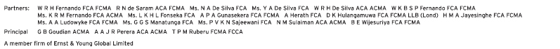

Financial Reports
Independent Auditors’ Report


To the Shareholders of Sri Lanka Telecom PLC
Report on the audit of the Financial Statements
Opinion
We have audited the financial statements of Sri Lanka Telecom PLC (“the Company”) and the consolidated financial statements of the Company and its subsidiaries (“the Group”), which comprise the statement of financial position as at 31 December 2019, and the statement of comprehensive income, statement of changes in equity and statement of cash flows for the year then ended, and notes to the financial statements, including a summary of significant accounting policies.
In our opinion, the accompanying financial statements of the Company and the Group give a true and fair view of the financial position of the Company and the Group as at 31 December 2019, and of their financial performance and cash flows for the year then ended in accordance with Sri Lanka Accounting Standards.
Basis for opinion
We conducted our audit in accordance with Sri Lanka Auditing Standards (SLAuSs). Our responsibilities under those standards are further described in the Auditor’s responsibilities for the audit of the financial statements section of our report. We are independent of the Group in accordance with the Code of Ethics issued by CA Sri Lanka (Code of Ethics) and we have fulfilled our other ethical responsibilities in accordance with the Code of Ethics. We believe that the audit evidence we have obtained is sufficient and appropriate to provide a basis for our opinion.
Key audit matters
Key audit matters are those matters that, in our professional judgement, were of most significance in our audit of the financial statements of the current period. These matters were addressed in the context of our audit of the financial statements as a whole, and in forming our opinion thereon, and we do not provide a separate opinion on these matters. For each matter below, our description of how our audit addressed the matter is provided in that context.
We have fulfilled the responsibilities described in the Auditor’s responsibilities for the audit of the financial statements section of our report, including in relation to these matters. Accordingly, our audit included the performance of procedures designed to respond to our assessment of the risks of material misstatement of the financial statements. The results of our audit procedures, including the procedures performed to address the matters below, provide the basis for our audit opinion on the accompanying financial statements.
| Key audit matter | How our audit addressed the key audit matter |
Revenue recognitionThe Group recognised revenue of LKR 85,948 Mn. from the provision of telecommunications services (mobile and fixed-line) for the year ended 31 December 2019. Significant effort was spent auditing the revenue recognised by the Group because systems related to revenue recognition are complex, involves frequent changes in rate structures and comprises a large volume of transactions which arise from a combination of different hardware or services sold which is recognised in accordance with Sri Lanka Accounting Standard – SLFRS 15 Revenue from contracts. |
How our audit addressed the key audit matter
|
Estimating useful lives of network equipmentAs at 31 December 2019, the Group’s network equipment accounted for 38% of the consolidated total assets. Depreciation on these assets amount to LKR 14,662 Mn. for the year ended 31 December 2019. The company policy is to depreciate the cost of the asset over its useful economic life on a straight-line basis. Estimating the useful lives of the network equipment requires judgement by the company and is a key focus for our audit. It involves the Group’s collective assessment of the industry practice, internal technical evaluation and experience with the similar assets in concluding the useful economic life of the network assets. The Group’s disclosures on property and equipment are included in Notes 3 (d) and 14 to the financial statements. |
How our audit addressed the key audit matter
|
Other information included in the 2019 Annual Report
Other information consists of the information included in the Annual Report, other than the financial statements and our auditor’s report thereon. Management is responsible for the other information.
Our opinion on the financial statements does not cover the other information and we do not express any form of assurance conclusion thereon.
In connection with our audit of the financial statements, our responsibility is to read the other information and, in doing so, consider whether the other information is materially inconsistent with the financial statements or our knowledge obtained in the audit or otherwise appears to be materially misstated. If, based on the work we have performed, we conclude that there is a material misstatement of this other information, we are required to report that fact. We have nothing to report in this regard.
Responsibilities of the management and those charged with governance
Management is responsible for the preparation of financial statements that give a true and fair view in accordance with Sri Lanka Accounting Standards, and for such internal control as management determines is necessary to enable the preparation of financial statements that are free from material misstatement, whether due to fraud or error.
In preparing the financial statements, management is responsible for assessing the Group’s ability to continue as a going concern, disclosing, as applicable, matters related to going concern and using the going concern basis of accounting unless management either intends to liquidate the Group or to cease operations, or has no realistic alternative but to do so.
Those charged with governance are responsible for overseeing the Company’s and the Group’s financial reporting process.
Auditor’s responsibilities for the audit of the Financial Statements
Our objectives are to obtain reasonable assurance about whether the financial statements as a whole are free from material misstatement, whether due to fraud or error, and to issue an auditor’s report that includes our opinion. Reasonable assurance is a high level of assurance but is not a guarantee that an audit conducted in accordance with SLAuSs will always detect a material misstatement when it exists. Misstatements can arise from fraud or error and are considered material if, individually or in the aggregate, they could reasonably be expected to influence the economic decisions of users taken
on the basis of these financial statements.
As part of an audit in accordance with SLAuSs, we exercise professional judgement and maintain professional skepticism throughout the audit. We also:
- Identify and assess the risks of material misstatement of the financial statements, whether due to fraud or error, design and perform audit procedures responsive to those risks, and obtain audit evidence that is sufficient and appropriate to provide a basis for our opinion. The risk of not detecting a material misstatement resulting from fraud is higher than for one resulting from error, as fraud may involve collusion, forgery, intentional omissions, misrepresentations, or the override of internal control.
- Obtain an understanding of internal control relevant to the audit in order to design audit procedures that are appropriate in the circumstances, but not for the purpose of expressing an opinion on the effectiveness of the internal controls of the Company and the Group.
- Evaluate the appropriateness of accounting policies used and the reasonableness of accounting estimates and related disclosures made by management.
- Conclude on the appropriateness of management’s use of the going concern basis of accounting and, based on the audit evidence obtained, whether a material uncertainty exists related to events or conditions that may cast significant doubt on the Group’s ability to continue as a going concern. If we conclude that a material uncertainty exists, we are required to draw attention in our auditor’s report to the related disclosures in the financial statements or, if such disclosures are inadequate, to modify our opinion. Our conclusions are based on the audit evidence obtained up to the date of our auditor’s report. However, future events or conditions may cause the Group to cease to continue as a going concern.
- Evaluate the overall presentation, structure and content of the financial statements, including the disclosures, and whether the financial statements represent the underlying transactions and events in a manner that achieves fair presentation.
- Obtain sufficient appropriate audit evidence regarding the financial information of the entities or business activities within the Group to express an opinion on the consolidated financial statements. We are responsible for the direction, supervision and performance of the group audit. We remain solely responsible for our audit opinion.
We communicate with those charged with governance regarding, among other matters, the planned scope and timing of the audit and significant audit findings, including any significant deficiencies in internal control that we identify during our audit.
We also provide those charged with governance with a statement that we have complied with ethical requirements in accordance with the Code of Ethics regarding independence, and to communicate with them all relationships and other matters that may reasonably be thought to bear on our independence, and where applicable, related safeguards.
From the matters communicated with those charged with governance, we determine those matters that were of most significance in the audit of the financial statements of the current period and are therefore the key audit matters. We describe these matters in our auditor’s report unless law or regulation precludes public disclosure about the matter or when, in extremely rare circumstances, we determine that a matter should not be communicated in our report because the adverse consequences of doing so would reasonably be expected to outweigh the public interest benefits of such communication.
Report on other legal and regulatory requirements
As required by Section 163 (2) of the Companies Act No. 07 of 2007, we have obtained all the information and explanations that were required for the audit and, as far as appears from our examination, proper accounting records have been kept by the Company.
CA Sri Lanka membership number of the engagement partner responsible for signing this independent auditor’s report is 1420.
15 June 2020
Colombo
